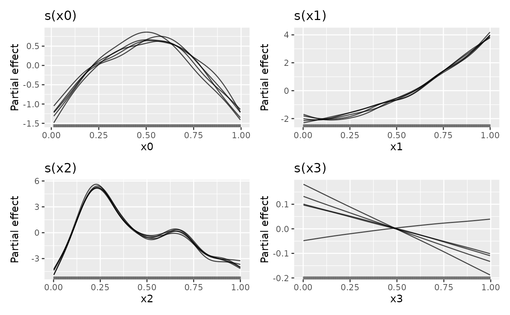
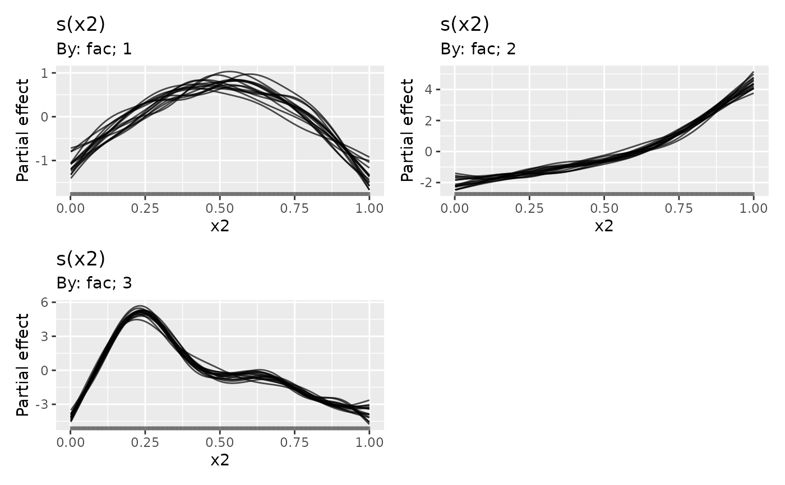
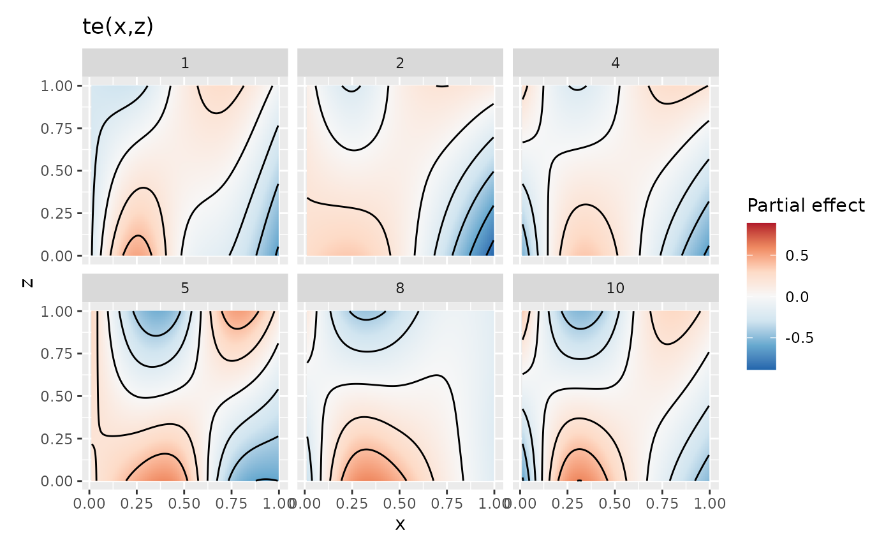
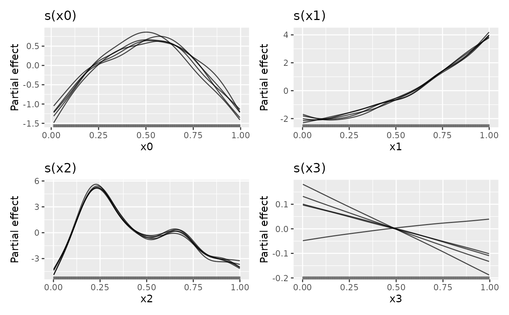
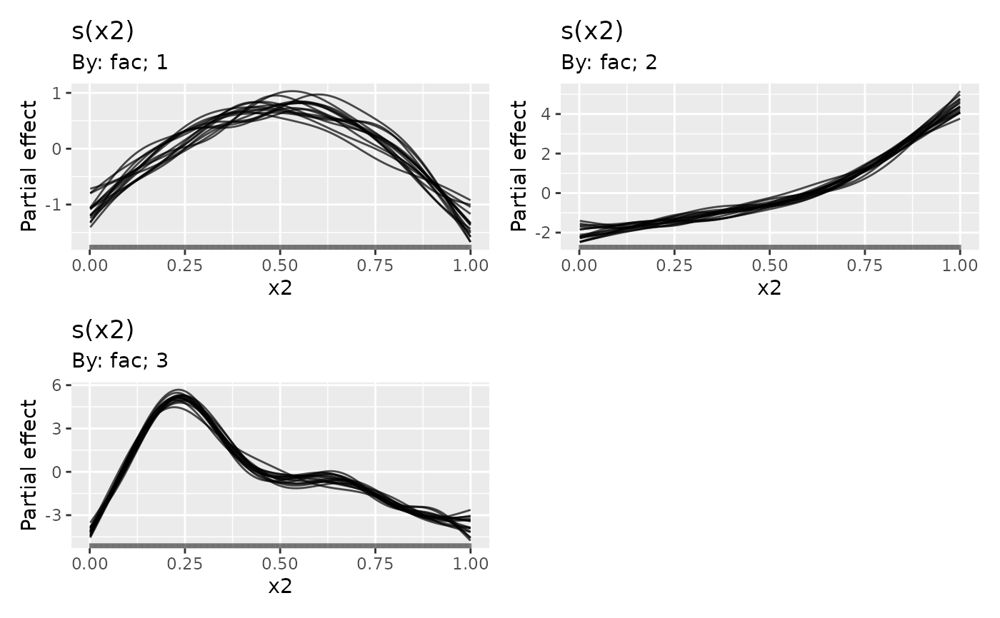
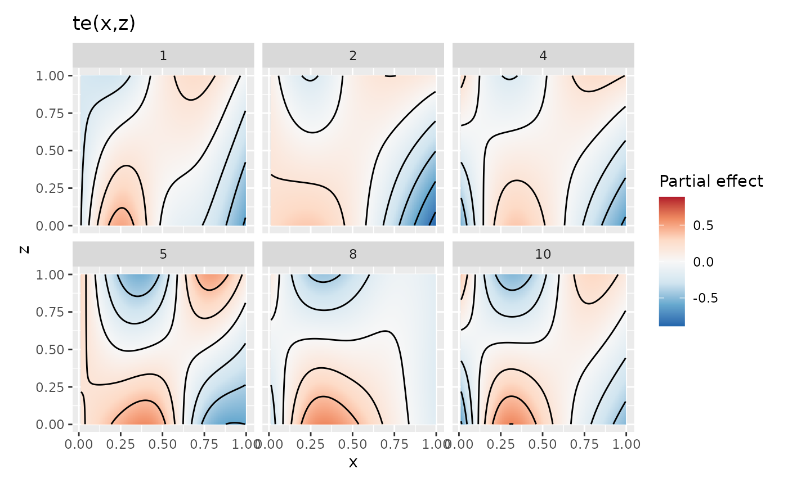

Plot posterior smooths
Usage
# S3 method for class 'smooth_samples'
draw(
object,
select = NULL,
n_samples = NULL,
seed = NULL,
xlab = NULL,
ylab = NULL,
title = NULL,
subtitle = NULL,
caption = NULL,
alpha = 1,
colour = "black",
contour = FALSE,
contour_col = "black",
n_contour = NULL,
scales = c("free", "fixed"),
rug = TRUE,
partial_match = FALSE,
angle = NULL,
ncol = NULL,
nrow = NULL,
guides = "keep",
...
)Arguments
- object
a fitted GAM, the result of a call to
mgcv::gam().- select
character, logical, or numeric; which smooths to plot. If
NULL, the default, then all model smooths are drawn. Numericselectindexes the smooths in the order they are specified in the formula and stored inobject. Characterselectmatches the labels for smooths as shown for example in the output fromsummary(object). Logicalselectoperates as per numericselectin the order that smooths are stored.- n_samples
numeric; if not
NULL, samplen_samplesfrom the posterior draws for plotting.- seed
numeric; random seed to be used to if sampling draws.
- xlab
character or expression; the label for the x axis. If not supplied, a suitable label will be generated from
object.- ylab
character or expression; the label for the y axis. If not supplied, a suitable label will be generated from
object.- title
character or expression; the title for the plot. See
ggplot2::labs().- subtitle
character or expression; the subtitle for the plot. See
ggplot2::labs().- caption
character or expression; the plot caption. See
ggplot2::labs().- alpha
numeric; alpha transparency for confidence or simultaneous interval.
- colour
The colour to use to draw the posterior smooths. Passed to
ggplot2::geom_line()as argumentcolour.- contour
logical; should contour lines be added to smooth surfaces?
- contour_col
colour specification for contour lines.
- n_contour
numeric; the number of contour bins. Will result in
n_contour - 1contour lines being drawn. Seeggplot2::geom_contour().- scales
character; should all univariate smooths be plotted with the same y-axis scale? If
scales = "free", the default, each univariate smooth has its own y-axis scale. Ifscales = "fixed", a common y axis scale is used for all univariate smooths.Currently does not affect the y-axis scale of plots of the parametric terms.
- rug
logical; draw a rug plot at the bottom of each plot for 1-D smooths or plot locations of data for higher dimensions.
- partial_match
logical; should smooths be selected by partial matches with
select? IfTRUE,selectcan only be a single string to match against.- angle
numeric; the angle at which the x axis tick labels are to be drawn passed to the
angleargument ofggplot2::guide_axis().- ncol, nrow
numeric; the numbers of rows and columns over which to spread the plots
- guides
character; one of
"keep"(the default),"collect", or"auto". Passed topatchwork::plot_layout()- ...
arguments to be passed to
patchwork::wrap_plots().
Examples
load_mgcv()
dat1 <- data_sim("eg1", n = 400, dist = "normal", scale = 1, seed = 1)
## a single smooth GAM
m1 <- gam(y ~ s(x0) + s(x1) + s(x2) + s(x3), data = dat1, method = "REML")
## posterior smooths from m1
sm1 <- smooth_samples(m1, n = 15, seed = 23478)
## plot
draw(sm1, alpha = 0.7)
 ## plot only 5 randomly smapled draws
draw(sm1, n_samples = 5, alpha = 0.7)

## A factor-by smooth example
dat2 <- data_sim("eg4", n = 400, dist = "normal", scale = 1, seed = 1)
## a multi-smooth GAM with a factor-by smooth
m2 <- gam(y ~ fac + s(x2, by = fac) + s(x0), data = dat2, method = "REML")
## posterior smooths from m1
sm2 <- smooth_samples(m2, n = 15, seed = 23478)
## plot, this time selecting only the factor-by smooth
draw(sm2, select = "s(x2)", partial_match = TRUE, alpha = 0.7)

# \donttest{
## A 2D smooth example
dat3 <- data_sim("eg2", n = 400, dist = "normal", scale = 1, seed = 1)
## fit a 2D smooth
m3 <- gam(y ~ te(x, z), data = dat3, method = "REML")
## get samples
sm3 <- smooth_samples(m3, n = 10)
## plot just 6 of the draws, with contour line overlays
draw(sm3, n_samples = 6, contour = TRUE, seed = 42)

# }
## plot only 5 randomly smapled draws
draw(sm1, n_samples = 5, alpha = 0.7)

## A factor-by smooth example
dat2 <- data_sim("eg4", n = 400, dist = "normal", scale = 1, seed = 1)
## a multi-smooth GAM with a factor-by smooth
m2 <- gam(y ~ fac + s(x2, by = fac) + s(x0), data = dat2, method = "REML")
## posterior smooths from m1
sm2 <- smooth_samples(m2, n = 15, seed = 23478)
## plot, this time selecting only the factor-by smooth
draw(sm2, select = "s(x2)", partial_match = TRUE, alpha = 0.7)

# \donttest{
## A 2D smooth example
dat3 <- data_sim("eg2", n = 400, dist = "normal", scale = 1, seed = 1)
## fit a 2D smooth
m3 <- gam(y ~ te(x, z), data = dat3, method = "REML")
## get samples
sm3 <- smooth_samples(m3, n = 10)
## plot just 6 of the draws, with contour line overlays
draw(sm3, n_samples = 6, contour = TRUE, seed = 42)

# }